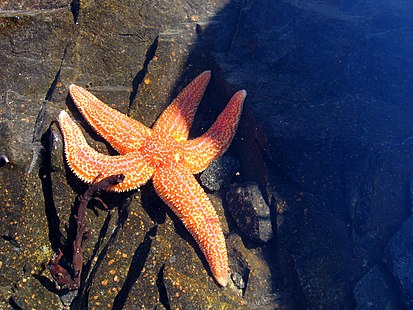

Рассмотрим некоторых представителей этой категории.
Красный астериас.
Вид морских звезд отряда Forcipulatida. Обитает на мелководьях северной части Атлантического океана (от Каролины на западе до Сенегала на востоке). Наиболее обычная звезда для Северного, Белого и западной части Балтийского морей. Модельный объект гистологических и цитологических исследований.

Gorgonocephalus eucnemis.
Вид горгоноцефалов, морских донных животных из класса офиур (Ophiuroidea) типа иглокожих (Echinodermata). Крупная ветвистолучевая офиура с диском диаметром до 14,3 см и многократно дихотомически ветвящимися лучами. Бореально-арктический циркумполярный вид, обитающий на шельфе и континентальном склоне северной части Евразии и Северной Америки на глубинах до 1850 м. Достаточно многочисленный, местами массовый вид, в некоторых бентических биоценозах составляющий одну из основных частей биомассы. Питается, отфильтровывая из воды крупный зоопланктон, захватывая его многочисленными очень гибкими концевыми ответвлениями лучей. Размножается, как и многие морские беспозвоночные, вымётывая половые продукты непосредственно в воду. Яйца и личинки входят в состав морского зоопланктона, молодые офиуры на ранних стадиях развития паразитируют на коралловых полипах, питаясь их внутренними тканями, подросшие селятся на дорсальной поверхности тела взрослых горгоноцефалов своего вида, питаясь их уловом. Иногда служат пищей хищным рыбам. Один из 10 видов широко распространённого в полярных и умеренных водах всего мира рода горгоноцефалов, самых крупных офиур.